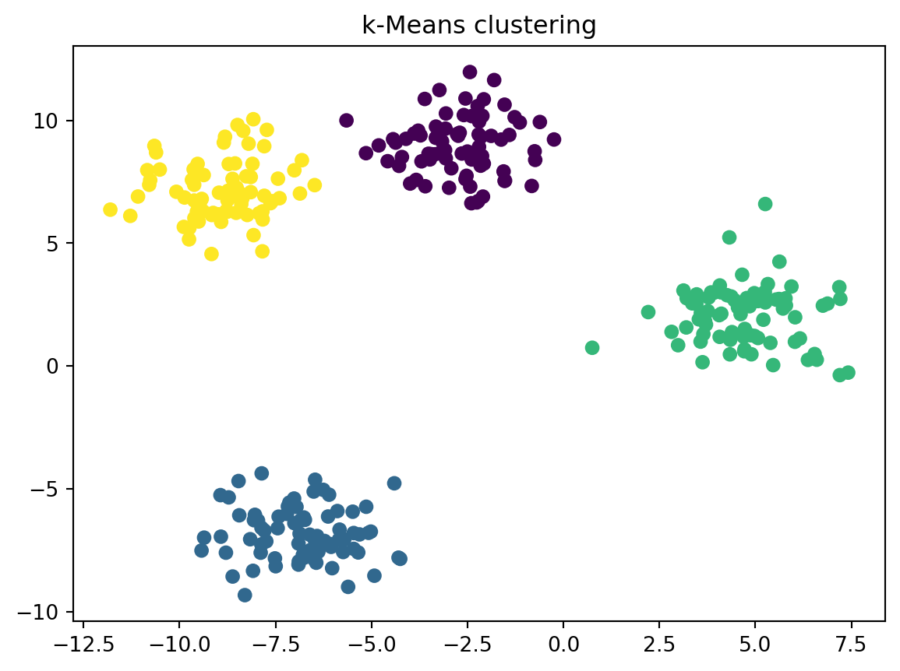

HiSupport Vector Machines Through the Four Lenses
Deconstructing Intelligence Using Mathematical Foundations
0.1 Introduction
Support Vector Machines (SVMs) are among the most powerful and mathematically elegant machine learning algorithms.
By examining SVM through the four foundational pillars—Linear Algebra, Statistics, Calculus, and Optimization—we uncover the deep mathematical structure that enables robust and generalizable learning.
This deconstruction demonstrates that even advanced AI systems are built upon a small set of fundamental mathematical principles.
0.2 The Linear Algebra Perspective
0.2.1 Geometry of Separation
From a linear algebra viewpoint, Support Vector Machines treat data as points in a high-dimensional vector space. Each input sample is represented as a feature vector, transforming learning into a problem of geometric separation.
At the core of SVM lies the concept of a hyperplane, defined by a weight vector and a bias term. This hyperplane acts as a decision boundary that separates data points belonging to different classes. Linear algebra governs how this boundary is oriented and positioned through operations such as dot products, vector norms, and projections.
A key innovation of SVM is the margin—the distance between the hyperplane and the nearest data points from each class. These nearest points, known as support vectors, uniquely define the model. As a result, SVM decisions depend on a small subset of critical data points rather than the entire dataset.
When data is not linearly separable, SVMs employ kernel functions that implicitly map data into higher-dimensional spaces, where linear separation becomes feasible. This highlights the expressive power of linear algebra in modern machine learning.
0.3 The Statistical Foundation
0.3.1 Risk, Margin, and Generalization
Statistics provides the framework for understanding what makes an SVM model effective. Unlike regression models that minimize squared error, SVMs rely on the hinge loss, which penalizes incorrect classifications and points that lie too close to the decision boundary.
A central statistical concept in SVM is regularization, which balances two competing objectives:
- Maximizing the margin (model simplicity)
- Minimizing classification errors (data fit)
This balance reflects the classical bias–variance trade-off. By controlling the regularization parameter, SVMs reduce overfitting while maintaining strong predictive performance.
Rather than modeling class probabilities explicitly, SVMs are grounded in statistical learning theory and the principle of structural risk minimization, ensuring robustness even in high-dimensional feature spaces.
0.4 The Calculus Engine
0.4.1 Gradients and Constraints
Although often presented geometrically, SVM training relies heavily on calculus. The learning objective is formulated as a constrained optimization problem, combining margin maximization with penalty terms for misclassification.
Calculus enables this formulation through:
- Gradients, which describe how the objective function changes
- Lagrange multipliers, which incorporate constraints directly into the optimization process
These tools transform intuitive geometric goals into a mathematically solvable problem. Even when closed-form solvers or quadratic programming techniques are used, calculus remains the underlying engine that guarantees correctness and convergence.
0.5 The Optimization Strategy
0.5.1 Finding the Maximum-Margin Solution
Optimization unifies all previous pillars into a practical learning algorithm. The SVM objective function is convex, meaning it has a single global minimum—an essential property for stable and reliable learning.
Optimization theory governs:
- How constraints are enforced
- Why convergence is guaranteed
- How efficiently solutions are found
Modern SVM implementations rely on quadratic programming and dual optimization methods, enabling efficient training even for large-scale datasets. The final model is defined entirely by its support vectors, making SVM both computationally efficient and interpretable.
0.6 Mapping SVM to the Four Pillars
Support Vector Machines demonstrate a seamless integration of all four foundational pillars:
- Linear Algebra: Feature spaces, hyperplanes, margins, kernels
- Statistics: Generalization, regularization, risk minimization
- Calculus: Gradients, constrained optimization, Lagrangians
- Optimization: Convex solvers, convergence, efficiency
This unified view reveals SVM as a mathematically disciplined system rather than a black-box classifier.
0.7 Curriculum Alignment
0.7.1 Core Machine Learning
Support Vector Machines act as a bridge between simple linear models and advanced classifiers, drawing equally from all four pillars.
0.7.2 Deep Learning
Concepts such as margins, regularization, and optimization directly influence modern neural network training and loss design.
0.7.3 Bayesian and Statistical Learning
Although SVMs are not probabilistic, their grounding in statistical learning theory provides a strong contrast to Bayesian approaches.
0.7.4 Optimization Theory and Deployment
Kernel selection, solver efficiency, and scalability highlight real-world optimization challenges encountered in AI systems.
0.8 Introduction
Support Vector Machines (SVMs) are among the most powerful and mathematically elegant machine learning algorithms.
By examining SVM through the four foundational pillars—Linear Algebra, Statistics, Calculus, and Optimization—we uncover the deep mathematical structure that enables robust and generalizable learning.
This deconstruction demonstrates that even advanced AI systems are built upon a small set of fundamental mathematical principles.
0.9 The Linear Algebra Perspective
0.9.1 Geometry of Separation
From a linear algebra viewpoint, Support Vector Machines treat data as points in a high-dimensional vector space. Each input sample is represented as a feature vector, transforming learning into a problem of geometric separation.
At the core of SVM lies the concept of a hyperplane, defined by a weight vector and a bias term. This hyperplane acts as a decision boundary that separates data points belonging to different classes. Linear algebra governs how this boundary is oriented and positioned through operations such as dot products, vector norms, and projections.
A key innovation of SVM is the margin—the distance between the hyperplane and the nearest data points from each class. These nearest points, known as support vectors, uniquely define the model. As a result, SVM decisions depend on a small subset of critical data points rather than the entire dataset.
When data is not linearly separable, SVMs employ kernel functions that implicitly map data into higher-dimensional spaces, where linear separation becomes feasible. This highlights the expressive power of linear algebra in modern machine learning.
0.10 The Statistical Foundation
0.10.1 Risk, Margin, and Generalization
Statistics provides the framework for understanding what makes an SVM model effective. Unlike regression models that minimize squared error, SVMs rely on the hinge loss, which penalizes incorrect classifications and points that lie too close to the decision boundary.
A central statistical concept in SVM is regularization, which balances two competing objectives:
- Maximizing the margin (model simplicity)
- Minimizing classification errors (data fit)
This balance reflects the classical bias–variance trade-off. By controlling the regularization parameter, SVMs reduce overfitting while maintaining strong predictive performance.
Rather than modeling class probabilities explicitly, SVMs are grounded in statistical learning theory and the principle of structural risk minimization, ensuring robustness even in high-dimensional feature spaces.
0.11 The Calculus Engine
0.11.1 Gradients and Constraints
Although often presented geometrically, SVM training relies heavily on calculus. The learning objective is formulated as a constrained optimization problem, combining margin maximization with penalty terms for misclassification.
Calculus enables this formulation through:
- Gradients, which describe how the objective function changes
- Lagrange multipliers, which incorporate constraints directly into the optimization process
These tools transform intuitive geometric goals into a mathematically solvable problem. Even when closed-form solvers or quadratic programming techniques are used, calculus remains the underlying engine that guarantees correctness and convergence.
0.12 The Optimization Strategy
0.12.1 Finding the Maximum-Margin Solution
Optimization unifies all previous pillars into a practical learning algorithm. The SVM objective function is convex, meaning it has a single global minimum—an essential property for stable and reliable learning.
Optimization theory governs:
- How constraints are enforced
- Why convergence is guaranteed
- How efficiently solutions are found
Modern SVM implementations rely on quadratic programming and dual optimization methods, enabling efficient training even for large-scale datasets. The final model is defined entirely by its support vectors, making SVM both computationally efficient and interpretable.
0.13 Mapping SVM to the Four Pillars
Support Vector Machines demonstrate a seamless integration of all four foundational pillars:
- Linear Algebra: Feature spaces, hyperplanes, margins, kernels
- Statistics: Generalization, regularization, risk minimization
- Calculus: Gradients, constrained optimization, Lagrangians
- Optimization: Convex solvers, convergence, efficiency
This unified view reveals SVM as a mathematically disciplined system rather than a black-box classifier.
0.14 Curriculum Alignment
0.14.1 Core Machine Learning
Support Vector Machines act as a bridge between simple linear models and advanced classifiers, drawing equally from all four pillars.
0.14.2 Deep Learning
Concepts such as margins, regularization, and optimization directly influence modern neural network training and loss design.
0.14.3 Bayesian and Statistical Learning
Although SVMs are not probabilistic, their grounding in statistical learning theory provides a strong contrast to Bayesian approaches.
0.14.4 Optimization Theory and Deployment
Kernel selection, solver efficiency, and scalability highlight real-world optimization challenges encountered in AI systems.
0.15 Key Takeaway
Support Vector Machines demonstrate that intelligence emerges from the disciplined interaction of mathematics.
By analyzing SVM through the four lenses, we uncover the same foundational structure that underpins both classical machine learning algorithms and modern AI systems.
0.16 Key Takeaway
Support Vector Machines demonstrate that intelligence emerges from the disciplined interaction of mathematics.
By analyzing SVM through the four lenses, we uncover the same foundational structure that underpins both classical machine learning algorithms and modern AI systems.
 # Setup
# Setup
101 1) Linear Regression
1.1 Idea
Predict a continuous value using a straight-line relationship.
1.2 When to use
- House price, marks prediction, trend estimation
- Baseline model for regression
1.3 Demo (synthetic)
MSE: 3.4522247956202796
R2 : 0.942791028778986
2 2) Logistic Regression (Classification)
2.1 Idea
Predict class probability using a sigmoid; good baseline for binary/multiclass.
2.2 When to use
- Spam vs not spam, disease yes/no
- Highly interpretable baseline
2.3 Demo (Breast Cancer dataset)
Accuracy: 0.9824561403508771
F1 : 0.9861111111111112
[[41 1]
[ 1 71]]3 3) k-NN
3.1 Idea
A point is classified by the majority label among its nearest neighbors.
3.2 When to use
- Small/medium datasets
- Nonlinear boundaries, simple intuition
Accuracy: 0.956140350877193
precision recall f1-score support
malignant 0.95 0.93 0.94 42
benign 0.96 0.97 0.97 72
accuracy 0.96 114
macro avg 0.96 0.95 0.95 114
weighted avg 0.96 0.96 0.96 114
4 4) Decision Tree
4.1 Idea
Split data by feature thresholds to reduce impurity (Gini/Entropy).
4.2 When to use
- Mixed feature importance explanations
- Easy visualization (but can overfit)
Accuracy: 0.93859649122807025 5) Random Forest
5.1 Idea
Many trees + bagging; reduces overfitting and improves stability.
5.2 When to use
- Strong general-purpose model
- Good with tabular data
Accuracy: 0.94736842105263156 6) Support Vector Machine (SVM)
6.1 Idea
Find a maximum-margin boundary; kernels allow nonlinear separation.
6.2 When to use
- Medium-sized data
- Strong classifier with scaling
Accuracy: 0.98245614035087717 7) Naive Bayes
7.1 Idea
Probability-based classifier assuming feature independence.
7.2 When to use
- Text classification, quick baselines
- Very fast
Accuracy: 0.93859649122807028 8) k-Means (Clustering)
8.1 Idea
Unsupervised grouping by minimizing distance to cluster centers.
8.2 When to use
- Market segmentation, grouping patterns
- Quick exploratory clustering
C:\Users\noors\anaconda3\envs\quarto\Lib\site-packages\sklearn\cluster\_kmeans.py:1419: UserWarning:
KMeans is known to have a memory leak on Windows with MKL, when there are less chunks than available threads. You can avoid it by setting the environment variable OMP_NUM_THREADS=2.

9 Quick Comparison Table
| Task | Good baseline | Strong tabular | Interpretable | Handles nonlinearity |
|---|---|---|---|---|
| Regression | Linear Regression | Random Forest Regressor | Linear Regression | RF / SVR |
| Classification | Logistic Regression | Random Forest | LR / Tree | SVM / RF / kNN |
| Clustering | k-Means | — | Medium | Depends |
10 Homework Ideas
- Train Logistic Regression + Random Forest and compare F1.
- Add hyperparameter tuning (GridSearchCV) for SVM or RF.
- Plot feature importance for Random Forest.